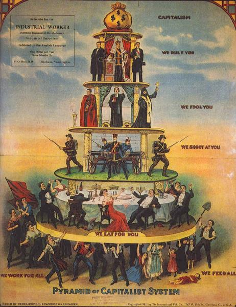

Deuda y sociedad
Introducción a la economía
La economía no es exclusivamente un asunto técnico, está entrelazada con todas las disciplinas sociales, en particular con la política.

The Pyramid of Capitalist System
Artículos / reportes
FMI, 2017 - Digital Revolutions in public finance (descarga)
FMI, 2018 - El dinero se transforma: El futuro del dinero en una economía digital
FMI, 2018 - Ejercicio de equilibrio: Gestión de las arcas del Estado
FMI, 2017 - Los mileniales y el futuro del trabajo
FMI, 2016 - La tecnología inteligente alza el vuelo
Scientific American, 2019 - Will Democracy Survive Big Data and Artificial Intelligence
M. Alvarez Texocotitla et al., 2019 - ¿Neoliberalismo populista en México?
M. Alvarez Texocotitla et al., 2018 - La doctrina del mercado libre desde una perspectiva económica
M. Alvarez Texocotitla et al., 2017 - La deuda pública, el crecimiento económico y la política
M. Alvarez Texocotitla et al., 2015 - Una revisión crítica a los modelos básicos de crecimiento económico
M. Alvarez Texocotitla et al., 2015 - La cultura y el Estado como factores fundamentales para el crecimiento económico
Videos
No hay videos por el momento.
Presentaciones
M. Alvarez Hernández, S. Alvarez Hernández, 2019 - Artificial Intelligence, Machine Learning, Data Science y Big Data: Una Presentación Cronológica y Conceptual